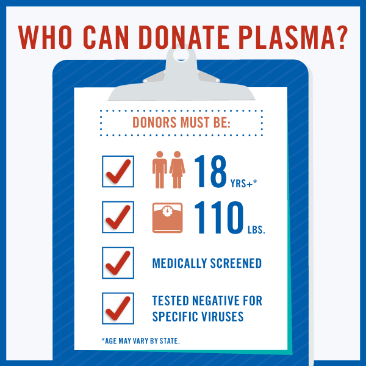

Plasma is the clear, straw-colored liquid portion of blood that remains after red blood cells, white blood cells, platelets and other cellular components are removed. It is the single largest component of human blood, comprising about 55 percent, and contains water, salts, enzymes, antibodies and other proteins.
- Composed of 90% water, plasma is a transporting medium for cells and a variety of substances vital to the human body.
- Plasma carries out a variety of functions in the body, including clotting blood, fighting diseases and other critical functions.
- Source plasma is plasma that is collected from healthy, voluntary donors through a process called plasmapheresis and is used exclusively for further manufacturing into final therapies (fractionation). Source plasma donors may be compensated for their time and effort.
- Recovered plasma is collected through whole blood donation in which plasma is separated from its cellular components. Recovered plasma may be used for fractionation.

Only a small number of people living in India who are eligible to donate blood or source plasma actually donate. What's important is that we encourage all forms of donation from those who are eligible, so that they may contribute life-saving blood and source plasma to those in need.
- The plasma protein therapeutics industry supports volunteerism donation in all of its forms. Source plasma donation and blood donation are critically important activities that contribute to saving lives. Source plasma and recovered plasma are used to produce therapies that treat people with rare, chronic diseases and disorders such as primary immunodeficiency, hemophilia and a genetic lung disease, as well as in the treatment of trauma, burns and shock. Whole blood donations most often are used locally in hospitals for transfusions required during surgery or other medical treatment.
- Plasma donation requires a commitment both in the amount of time for each donation and frequency of donation. Typically it takes between one and three hours to donate source plasma, and plasma can be donated twice within a seven day period. Whole blood donation takes less time—under 30 minutes—and donors donate less frequently—no more than once in eight weeks. The programs may fit into a donor's life differently at various times in the donor's life, and are equally important in helping to fulfill a vital medical need.